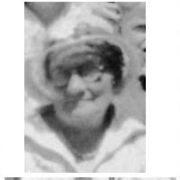

Joel Jesse Roundy Family Information and Photos
Home
Histories
Charts
Photos
Maps
Restricted
News
Info
Contact
| <--(return)-- |   | Shadrach Roundy and Betsy Quimby |
----> |   | Lorenzo Wesley and Priscilla Parrish  ----> |
 
| Joel Jesse and Sarah Catherine Stapley Roundy
|
Joel and Sarah Catherine Roundy

Catherine Roundy in 1934
Some History Selections
(From the history of Annie Isadore Roundy, his younger sister)The summer after my father died, I went with my mother and brother down to Dixie. It was up on the Virgin River. Father had an orchard there. We went to dry fruit. We lived in a room that only had a half of a roof on it. It was across the Virgin River. I used to wade the river and go to the town to see some neighbors. There was a girl there my age. The people had to dry their fruit those days. They didn't have much sugar. They would have bees though. They would invite the young people to help. They would spread the fruit out on boards to dry - they would have a good time. They finally got to raising cane, from which they made molasses. We would make cakes and candy with molasses. The lights they had were made out of tallow. A mold would have a wick run through, then melted tallow run through it . Then they would let it get cold and it would make a candle. They would shear their sheep and wash the wool, spin and weave their cloth and yarn to knit their stockings. The sisters would take their knitting and go visiting and stay all day, enjoying themselves. My two older brothers were left to take care of the farm. Samuel was 13, and Joel was 11. They both had to run the farm. I would help pick up potatoes and sometimes led the horse when furrowing out the corn and potatoes.
(From "The Roundy Family in America", by Everett E. Roundy, pp. 299-300)
"Joel Jesse Roundy was the fourth child of Lorenzo and Priscilla and was born at Centerville, Utah, in 1864. Joel entered with a great deal of spirit into the outdoor life of that mountainous and wild region. He was a fleet runner and fine horseman. He tells of an incident as a boy which nearly cost his life. In those days many wild animals roamed the woods and hills around Centerville and persons who ventured far off the beaten path were usually armed. Joel was fifteen when he and a group of other boys including his older brothers planned to start early in the morning for a berry-picking expedition. True to boyish tradition with adventure in store, Joel was impatient to be off and did not wait for his companions, Far up on the mountain in the early dawn, Joel came upon the charred trunk of an old tree, the top of which had been completely burned off, giving the appearance in the duskish morning light of some weird animal lying in wait. Joel decided to sit down beside the stump and await the arrival of his companions. After some minutes Joel began to look about and finally saw them some distance down the mountain, running like frightened deer. He hurried down after them and when he could get their attention they shouted breathlessly that a strange animal of enormous size was waiting for them farther up the mountain. Joel explained that it was merely a stump and that he himself had been resting beside it. Then his elder brother made the disquieting remark that he had taken aim with his double-barreled shotgun to kill the grotesque animal but, although he had tried three times to fire, something prevented the gun from discharging.
"Joel had a colt, "Chloe," which he had trained to play "hide-and-seek" with him. She would come at his whistle wherever he was and also performed other clever stunts. The winters in that locality were usually scenes of many frolicsome sleigh-rides in which the young blades did their best to tip over their ladies-fair by climbing deep drifts or cutting corners at top speed, in order to hear the girls scream in mock-terror. When Joel was twenty-two, an acquaintance asked him to look out for his lady-friend for him while he (the acquaintance) went on a "prospecting" trip. Now, it appears that Joel had felt a secret admiration for the girl before this wonderful opportunity, but, like John Alden of old, could not overcome his natural bashfulness sufficiently to express his sentiments. However, Joel did a very complete job of looking after her - and married her himself in 1887. She was Sarah C. Stapley.
"Joel Jesse Roundy had occupied a position of considerable prominence in his community. He has been president of the Young Men's Improvement Association for five years; superintendent of the Sunday School twenty-one years; bishop's councillor ten years; justice of the peace two years; school trustee twenty years; president of two field corporations; road surveyor; sheriff or town marshall for two terms; a deacon-teacher for twelve years and Sunday School teacher for some time. He is now chairman of their genealogical committee and on the Sunday School Board. He also attended the first Sunday School convention in Utah in November, 1898. Joel and Sarah celebrated their fiftieth wedding anniversary on March 11, 1937. Their nine children are Sarah, James, Jesse, Rebecca, Golden, Estella, Reba and Reva (twins), and Karl."
Joel Jesse Roundy and family
Mr. and Mrs. Joel Jesse Roundy (Sarah C. Stapley) (Seated in Center); and their children: (Standing Left to Right) Reba, Karl, Reva (Mrs. George B. Webster), Jesse C., Rebecca Annis (Mrs. Albert C. Tietjen); Estella (Mrs. Ellis A. Russell), Golden Parrish; (Seated, at Left) Sarah Elizabeth (Mrs. Victor L. Sylvester); (Seated, at Right) James Lorenzo Roundy.
(Sons) Karl Roundy, Golden Roundy, Jesse C Roundy, James Lorenzo (Ren) Roundy, Joel Jesse Roundy (Father)
Jesse C Roundy
Jesse C Roundy Family, Taken 6 Dec 1942 (Back - Derrall, Nancy Lillian, Jesse 'C' *, Lora May, Front - Kay, Ruthell, Clair) * Jesse had passed away before this picture was taken and was inserted in, picture is from the above photo
Karl Roundy, Reva, Annis Tietjen, Estella Russell, Reba LaFever, James Lorenzo Roundy - Taken Feb 1968